Flash 移植指南
前言
本文档主要介绍如何基于Fmcv100驱动新增Flash器件及常见问题分析。
本文档中涉及的器件型号，仅表示测试结果，不提供兼容性承诺。
与本文档相对应的产品版本如下。
本文档（本指南）主要适用于以下工程师：
- 技术支持工程师
- 软件开发工程师
在本文中可能出现下列标志，它们所代表的含义如下。


新Flash器件移植
导读
本文档基于Fmcv100（Flash Memory Controller以下简称FMC）控制器，提供FLASH器件的移植方法。FMC集成SPI NOR Flash、SPI NAND Flash、并口Nand Flash三个控制器，部分平台上裁剪成二合一的控制器，即包含SPI NOR Flash和SPI NAND Flash两个控制器。
- 当选用的SPI NOR Flash器件的型号与SPI NOR Flash器件兼容性列表中型号不同时，需要在SPI NOR Flash驱动的ID列表中新增器件ID节点以及器件相关的功能函数，主要包括读写擦类型、时钟、ID值、实现并指定器件相关的功能函数（4Byte寻址，四线读写使能、复位函数等）。
- 当选用的SPI NAND Flash器件的型号与SPI NAND Flash器件兼容性列表中型号不同时，需要在SPI NAND Flash驱动的ID列表中新增ID节点以及器件相关的功能函数，主要包括读写类型、时钟频率，ID值、实现并指定四线使能处理函数。
SPI NOR Flash器件的移植
由于Flash驱动都在标准化，内核下的SPI NOR Flash驱动已经匹配最新的标准化驱动框架，而U-Boot下的SPI NOR Flash驱动使用的是非标准化的版本。
当前u-boot-2022.07支持使用4 Byte命令访问大于16MB的SPI NOR Flash，详见u-boot-2022.07下大于16MB SPI NOR Flash的移植。
SPI-Nor U-Boot下的移植
相关驱动路径
目前U-Boot下的SPI NOR Flash驱动使用的是没有标准化的版本。
U-Boot下的路径：drivers/mtd/spi/fmc100/
非标准化SPI NOR Flash驱动新器件移植有关的目录如下表1所示。
表 1 SPI NOR Flash器件相关的主要目录结构
SPI NOR Flash器件ID表，移植新的器件主要修改的文件，主要包含SPI NOR Flash器件的读写擦的参数和功能函数钩子的赋值。 |
|
SPI NOR Flash驱动大部分器件通用的功能函数代码。包含写使能等操作，4Byte寻址与四线读写，但是只适应部分厂商，特殊器件需要根据器件手册增加相应的实现函数 |
如何新增一颗SPI NOR Flash
新移植一个SPI NOR Flash器件，简单来说就是往_fmc_spi_nor_ids.c_的ID注册信息结构体中增加一个ID节点，如图1所示。
接下来详细讲述如何在ID表里面新增一颗SPI NOR Flash。

-
填写器件基础信息。
“spi_nor_name”：填写器件名字，在启动的阶段方便查看。
{0xid, 0xid, 0xid}：填写器件ID，从器件手册中通过查找9FH命令，查看器件ID信息。
3, _16M, _64K, 3：分别对应是器件id长度，器件大小，器件块大小，器件寻址模式。这些信息都可以在器件手册的FEATURES页查看到
例如：根据下面的图和器件信息可以得知：器件id长度为3、器件大小为256Mb，即为32M、器件块大小可以为4K、32K、64K可选。器件寻址模式根据器件大小来定，大于16M的为4，小于等于16M的为3。

获取器件的chip size、block size信息
- 256 Mb: 268,435,456 x 1 bit structure or 134,217,728 x 2 bits (two I/O mode) structure or 67,108,864 x 4 bits (four I/O mode) structure
- Equal Sectors with 4k byte each, or Equal Blocks with 32K byte each or Equal Blocks with 64K byte each
-
填写读写模式：从器件手册的Features章节中获取器件所支持的接口类型。
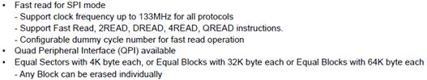
上图可以看出器件支持Fast Read, 2READ, DREAD, 4READ, QREAD这几种读模式，通过查询表1，可以匹配出spi nor器件所支持的接口及其对应的驱动中的宏定义，如表1斜体字所示。写模式同理。
器件可能同时支持好几种读模式和写模式，可以根据场景挑选最优模式匹配填写即可。此外，Erase操作我们默认匹配Block Erase 64K命令。
例如：通过器件手册可以查询到03H、0BH、3BH、BBH和02H、32H关键字，说明器件支持对应的读写模式，这时填入注册信息结构体的就是_驱动中的宏定义_那一列的信息
表 1 SPI 接口匹配查询表
 注意：
注意：
在器件注册信息结构体适配过程中，不需要将所有的读写模式都全部填写上去。上面的示例是为了更好的描述如何适配器件。实际使用过程中，读写模式都可以根据使用场景只适配一种即可。步骤4中的宏定义同上。 -
确定接口的dummy值和工作时钟。
-
Dummy num的确认
根据SPI NOR Flash的SPI接口的定义的特点，可以有以下结论。
- Standard SPI STD Read和所有Write及Erase接口的Dummy值为0；
- Dual-Output/Dual-Input SPI和Quad-Output/Quad-Input SPI接口Dummy值为1；
- Dual I/O SPI和Quad I/O SPI的接口Dummy值需要参考手册计算。
 危险：
危险：
因为有的器件dummy的计算还要依据读写接口的驱动能力（详见手册Output Driver Strength Table）做调整，比较复杂，所以建议用户在移植器件接口时可以适当舍去Dual I/O SPI（2READ/2PP）和Quad I/O SPI(4READ/4PP)两种接口类型。对于性能的需求不是很苛刻的场景，这两种接口相对于Dual-Output/Dual-Input SPI和Quad-Output/Quad-Input SPI并不会有很大的性能收益。这里只举例在器件默认DC值为0x00时的dummy值计算方法：
- Dual I/O SPI Read
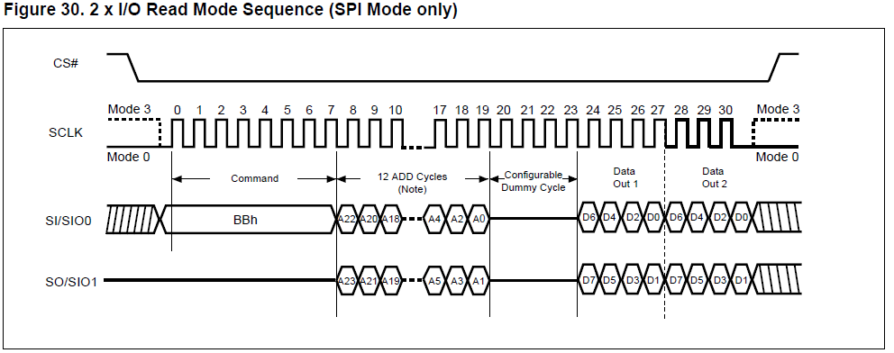
从器件手册中的波形图可以看出Dual I/O SPI Read需要20-23的4个dummy cycle的时钟周期，又因为接口是两线，所以相当于要有8 dummy cycle bit，相当于1 dummy cycle Byte。根据芯片手册dummy_num的定义：&READ_DUAL_ADDR(1, INFINITE, 84)中dummy值填1。
- Quad I/O SPI Read
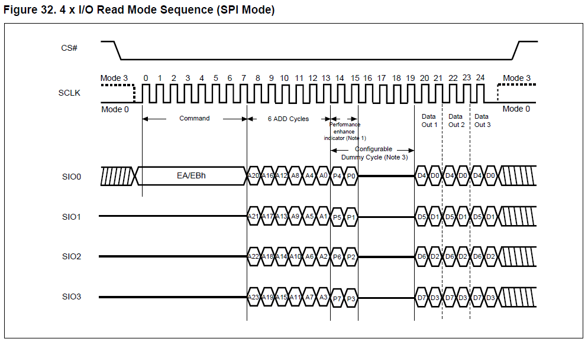
从器件手册中的波形图可以看出Quad I/O SPI Read需要14-15的2个cycle的Performance enhance（有的厂家的器件是M7-M0）的时钟周期，16-19的4个dummy cycle的时钟周期，加起来6个cycle。又因为接口是四线，所以相当于要有24 dummy cycle bit，相当于3 dummy cycle Byte。根据芯片手册dummy_num的定义：&READ_QUAD_ADDR (3, INFINITE, 80)中dummy值填3。
-
接口工作时钟
接口&READ_QUAD_ADDR(3, INFINITE, 80)中的工作频率是依据每个手册里面的AC CHARACTERISTICS表获取。

 须知：
须知：
从手册里面可以看到器件所能支持的最高接口时钟84MHz/133MHz，但是目前FMC对于1.8V IO接口时钟最高只能支持150MHz（即75MHz），所以如果器件为1.8V的话填写80MHz，主要是为了限制接口时钟。器件为3.3V的话接口时钟最大支持到99MHz。 -
-
当根据上述步骤填写完如图所示接口的信息后，需匹配宏定义。
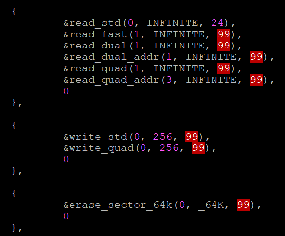
在fmc_spi_nor_ids.c源代码路径开头几行中匹配宏定义。
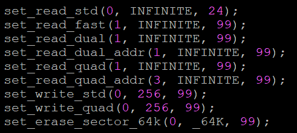
-
匹配完接口信息，最后一步要匹配器件相关功能函数钩子。目前提供了两个基础功能函数钩子：分别是有qe使能和没有qe使能两种。我们需要关注的以下几个接口赋值：
static struct spi_drv spi_driver_general = { .wait_ready = spi_general_wait_ready, .write_enable = spi_general_write_enable, .entry_4addr = spi_general_entry_4addr, .qe_enable = spi_general_qe_enable, }; static struct spi_drv spi_driver_no_qe = { .wait_ready = spi_general_wait_ready, .write_enable = spi_general_write_enable, .entry_4addr = spi_general_entry_4addr, .qe_enable = spi_do_not_qe_enable, };-
.wait_ready = spi_general_wait_ready，等待器件ready。
通过读器件状态寄存器的WIP bit来判断器件是否处于空闲状态，一般所有SPI NOR Flash都满足这个机制。
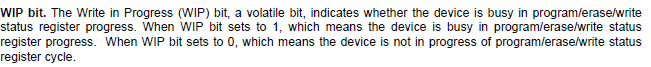
-
.write_enable = spi_general_write_enable，写使能接口。
通过写器件状态寄存器的WEL bit来改变器件是否可操作，一般所有SPI NOR Flash都满足这个机制。
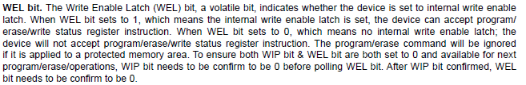
 说明：
说明：
- 因为各个厂家对器件状态寄存器的命名方法有差异，如图2所示，但是访问寄存器的命令字是一样的，所以下面我们使用命令字来区分状态寄存器：05状态寄存器、35状态寄存器和15状态寄存器。
- 如上所述WIP bit和WEL bit基本上在所有的SPI NOR Flash的状态寄存器上的位置都一致，都是第0和第1个bit位置。以下3Byte/4Byte切换和QE使能所涉及的35状态寄存器和15状态寄存器不同厂家和器件存在很大的差异，所以将以一个专题来讲解。
-

3Byte/4Byte切换和QE使能专题
.entry_4addr = spi_general_entry_4addr和qe_enable = spi_general_qe_enable，这两个接口内容比较多，作为一个专题来讲解。
用户在移植新的Flash器件时，需要根据器件的具体情况来适配3Byte/4Byte模式切换的接口。
-
.entry_4addr = spi_general_entry_4addr，切换器件3Byte/4Byte模式的接口，只有当器件容量大于16MB时，才会调用这个接口。
一般的器件SPI NOR Flash都是提供Enter 4-byte mode (EN4B)和Exit 4-byte mode (EX4B)来实现器件3Byte/4Byte模式的切换，并通过判断15状态寄存器的bit5来判断是否切换成功。
而其他器件在切换3Byte/4Byte模式之间的差异总体上分为以下三类：
-
切换3Byte/4Byte模式的方式不一样：
一般不是通过发EN4B和EX4B命令来切换3Byte/4Byte模式的，而是通过改变Bank Address Register的bit7的值来切换。
- 通过命令来切换3Byte/4Byte模式，但是检查是否切换成功的寄存器不是15状态寄存器，而是通过检查器件的FLAG STATUS REGISTER的bit0来判断切换3Byte/4Byte模式是否成功。
- 不能简单通过EX4B命令来将4Byte模式切换回3Byte模式，得通过发送复位命令来将4Byte模式切换回3Byte模式。
-
-
.qe_enable = spi_general_qe_enable，器件四线使能的函数接口。
使能器件的QE（QUAD ENABLE）bit的差异主要是不同厂家不同器件的QE bit分布不一样导致的。这些差异只能通过实际的器件手册来分析。
接下来详细讲解一下这个接口的函数实现，其他器件都是大同小异。


如果需要新增一个QE使能接口，可以参考上面的代码实现，代码流程不需要更改，需要关注的是代码中的几处标识：
- tag1：读取QE bit所在器件寄存器的命令；
- tag2：写入QE bit所在器件寄存器的命令；
- tag3：判断QE bit是否设置成功。
u-boot-2022.07下大于16MB SPI NOR Flash的移植
u-boot-2022.07版本的芯片平台优化了Fmcv100控制器，解除需要硬件接reset管脚的限制。但对于容量大于16MB的器件必须要求支持4 Byte命令。
如果移植大于16MB的SPI NOR Flash器件不支持4Byte命令，请参考“如何新增一颗SPI NOR Flash”进行移植，但是必须把接口限制成2线且硬件连reset引脚。
以下描述如何在ID表里面新增一颗支持4Byte命令的SPI NOR Flash。
在ID表里面新增一颗支持4Byte命令的SPI NOR Flash，跟“如何新增一颗SPI NOR Flash”章节的步骤1,3,4,5一样。唯一的差异就是步骤2中。读写模式的命令字不同，所以填写驱动中的宏定义也有所不同，如下所示：
{
"spi_nor_name", {0xid, 0xid, 0xid}, 3, _32M, _64K, 4,
{
&read_quad_addr4b(3, INFINITE, 99),
0
},
{
&write_quad4b(0, 256, 99),
0
},
{
&erase_sector_64k4b(0, _64K, 99),
0
},
&spi_driver_general,
},
首先，从器件手册的command set章节中确认是否支持4Byte命令。
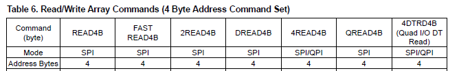
通过查询表1，可以查询支持的接口及其对应的驱动中的宏定义，如表1斜体所示。
此外，Erase操作我们默认匹配Block Erase 64K4B命令。
表 1 SPI 接口匹配查询表
DTR模式SPI NOR Flash的移植
Flash器件本身支持DTR功能，才能进行DTR模式的适配。DTR模式只支持读操作。
驱动中通过宏开关CONFIG_DTR_MODE_SUPPORT来打开和关闭DTR接口，很多平台上是默认没有打开DTR接口的，使用DTR模式必须确保四线接口开放。
u-boot-2022.07版本支持DTR模式的宏开关在menuconfig中通过选项Device Drivers-> MTD Support->SPI Flash Support-> Spi Nor Device DTR mode Support打开。
同STR单沿模式适配的不同点，如图1所示的红色标记部分。

DTR模式移植步骤跟如何新增一颗SPI NOR Flash章节一样，这里不再赘述。下面主要阐述同如何新增一颗SPI NOR Flash章节步骤2的差异。
从厂家提供的器件手册“Features”章节中获取器件所支持的接口类型。
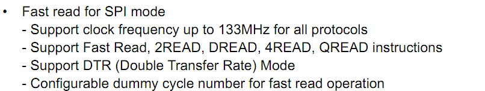
通过表1所示，可以匹配出器件的接口及其对应的驱动中的宏定义。
表 1 SPI DTR接口匹配查询表
SPI-Nor内核下的移植
相关驱动路径
目前内核下的SPI Nor驱动使用的是标准化的版本。
驱动路径：drivers/mtd/spi-nor/
标准化SPI Nor驱动新器件移植有关系的目录如表1所示。
表 1 标准化SPI Nor器件相关的主要目录结构
内核下的注册信息文件如果bsp-generic.c无法支持就添加到spi-nor.c文件下面。 标准驱动框架，定义SPI Nor驱动中主要的数据结构；定义SPI Nor器件id表，移植新SPI Nor器件主要修改的文件；区分不同器件3/4byte切换及其四线使能等操作。 |
如何新增一颗SPI NOR Flash
新移植一个SPI NOR Flash器件，简单来说就是往对应厂商的.c文件或者bsp-generic.c的ID注册信息结构体中增加一个ID节点，如图1所示。
接下来详细讲述如何在ID表里面新增一颗SPI NOR Flash。

不像SPI Nor的非标准化驱动，可以对同一个厂家的不同器件适配不同的接口函数，标准驱动中，只对厂家做出区分，如果同一个厂家不同的器件在接口类型的匹配上存在差异，可能需要限制接口来兼容。
-
填写器件基础信息。
- “spi_nor_name”：填写器件名字，在启动的阶段方便查看。
- 0xid1id2id3：填写器件ID，从器件手册中通过查找9FH命令，查看器件ID信息。示例：0xAABBCC
- 64 * 1024, 256：分别是器件块大小，器件块数量。示例：器件大小为16M，块大小为64K，那么块数量就是16*1024/64=256
例如：根据下面的图和器件信息可以得知：器件大小为32M，块大小为64K，块数量为512

获取器件的chip size、block size信息，分别是32MB、64KB：
- 256Mb: 268,435,456 x 1 bit structure or 134,217,728 x 2 bits (two I/O mode) structure or 67,108,864 x 4 bits (four I/O mode) structure
- Equal Sectors with 4K byte each, or Equal Blocks with 32K byte each or Equal Blocks with 64K byte each
-
关于读写接口都统一在drivers/mtd/spi-nor/core.h，根据厂家进行区分，参考代码如下。
 说明：
说明：
如图，PARAMS(xxx)全接口支持表示的是器件支持1-wire（STD和FAST READ）、2-wire（DUAL-OUTPUT/DUAL-INPUT和DUAL-I/O）、4-wire（QUAD-OUTPUT/QUAD-INPUT和QUAD-I/O）所有接口。当ID节点中PARAMS(xxx)参数缺省时，器件的接口类型由节点里面的SPI_NOR_QUAD_READ/SPI_NOR_DUAL_READ指定。所以，当新增器件无法全接口匹配时，可以使用SPI_NOR_QUAD_READ/SPI_NOR_DUAL_READ指定器件的接口。 -
确定的工作时钟。
须知：
版本默认发布的工作时钟的值是经过兼容性测试的，所以这个值不建议修改。参考器件手册中AC CHARACTERISTICS表获取器件的工作时钟，根据实际使用的接口类型选择相应的时钟：
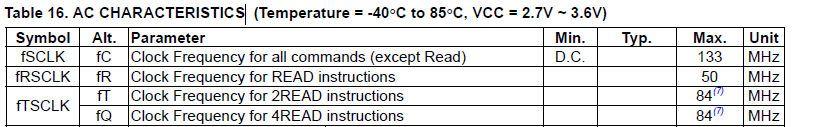
说明：
鉴于当前《XX兼容器件列表》中的所有器件均支持FAST READ（由DTS中的m25p,fast-read指定），因此上图中READ命令（对应STD READ）支持的最大时钟频率可以忽略。从器件手册，该器件支持的最大时钟频率为133MHz，然后2READ/4READ接口仅支持至84MHz。由于我们对器件实现是全接口支持（通过PARAMS(xxx)定义），故应将器件的时钟频率设定为较小的84MHz。确定完器件所能支持的最大时钟，接下来要确定芯片CRG提供给FMC控制器的最大时钟，参考对应芯片手册的“系统”章节，假如FMC的时钟源最佳可以匹配到150MHz的时钟，在boards/dmeb/dts/xxxx-demb.dts文件中，如果是64位项目，对应路径为arch/arm64/boot/dts/vendor/xxxx-demb.dts。找到以下设备节点，并更改spi-max-frequency = <150000000>;的值，注意：真实填写到这个节点的频率值都是2X时钟，也就是说当spi-max-frequency参数填写150000000 (Hz) 时，CRG实际提供的时钟是75MHz。

综合上面提到的器件时钟和CRG时钟，这两个的最小值就是实际接口时钟75MHz。
SPI NAND Flash器件的移植
相关驱动路径
目前SPI Nand驱动使用的都是没有标准化的版本。
- Uboot的驱动路径：drivers/mtd/nand/raw/fmc100/
- 内核的驱动路径：drivers/mtd/nand/fmc100/
非标准化SPI Nand驱动新器件移植有关系的目录如表1所示。
表 1 SPI Nand器件相关的主要路径
SPI Nand器件ID表，移植新SPI Nand器件主要修改的文件。主要包含SPI Nand器件的读写擦除参数；下面描述以fmc_ids_hi35xxvxxx.c为例。 |
|
如何新增一颗SPI NAND Flash
FMC控制器自身集成ECC纠错功能，如图1所示，FMC启动之后会关掉SPI NAND Flash器件的ECC，而关闭ECC这个动作，只能支持将B0h Feature寄存器的bit4置成0。所以，判断一颗SPI NAND Flash器件FMC能不能支持的第一步就是先看看这颗器件的B0h Feature寄存器的bit4是否是ECC_EN bit，如果不是，那就不支持。

新移植一个SPI NAND Flash器件，简单来说就是往_fmc_ids_hi35xxvxxx.c_的ID注册信息结构体中增加一个ID节点，如图2所示。
以下描述如何在ID表里新增一颗SPI NAND Flash。

-
填写器件基础信息。
- “spi_nand_name”：填写器件名字，在启动的阶段方便查看。
- {0xid, 0xid, 0xid}：填写器件ID，从器件手册中通过查找9FH命令，查看器件ID信息。

获取器件的chip size、block size(erase size)、page size、OOB size信息，其他信息不确定的情况下，请保持跟示例中的ID信息一致。

-
从手册的Features章节中获取器件所支持的接口类型
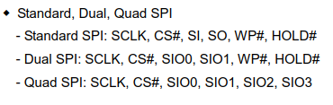
上图可以看出器件支持Fast Read, 2READ, DREAD, 4READ, QREAD这几种读模式，通过查询表1，可以匹配出spi nor器件所支持的接口及其对应的驱动中的宏定义，如表1斜体字所示。写模式同理。器件可能同时支持好几种读模式和写模式，可以根据场景挑选最优模式匹配填写即可。
根据步骤1中可以知道器件的block size是128K，所以我们应该匹配Block Erase 128K命令。
表 1 SPI 接口匹配查询表
-
确定接口的dummy值和工作时钟
- Dummy num的确认
参照手册SPI NAND Flash的SPI接口的定义：
（1）Standard SPI STD Read的Dummy值为1，所有Write及Erase接口的Dummy值为0；
（2）Dual-Output/Dual-Input SPI和Quad-Output/Quad-Input SPI接口Dummy值为1；
（3）Dual I/O SPI和Quad I/O SPI的接口Dummy值要参考手册计算：
-
Dual I/O SPI Read
从器件手册中的波形图可以看出Dual I/O SPI Read需要16-19的4个dummy cycle的时钟周期，又因为接口是两线，所以相当于要有8 dummy cycle bit，相当于1 dummy cycle Byte。根据芯片手册dummy_num的定义：&READ_DUAL_ADDR(1, INFINITE, 120)中dummy值填1。
-
Quad I/O SPI Read
从器件手册中的波形图可以看出Quad I/O SPI Read需要12-13的2个dummy cycle的时钟周期。又因为接口是四线，所以相当于要有8 dummy cycle bit，相当于1 dummy cycle Byte。根据芯片手册dummy_num的定义：&READ_QUAD_ADDR (1, INFINITE, 120)中dummy值填1。
-
接口工作时钟
举个例子，接口&READ_QUAD_ADDR(1, INFINITE, 120)中的工作频率是依据每个手册里面的AC CHARACTERISTICS表获取。
-
当根据上面几个步骤填好如下图接口的信息之后，要匹配宏定义。
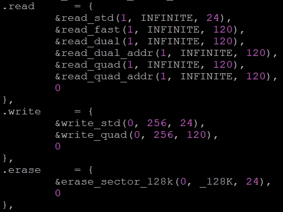
在_fmc_ids_hi35xxvxxx.c_源代码路径开头几行中匹配宏定义：
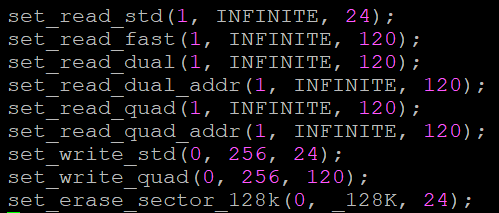
-
匹配完接口信息，最后一步要匹配器件相关函数钩子&spi_driver_no_qe和&spi_driver_general,（结构体struct spi_drv）。
.wait_ready = spi_general_wait_ready, .write_enable = spi_general_write_enable, .qe_enable = spi_general_qe_enable,或.qe_enable = spi_do_not_qe_enable 说明：
目前驱动中&spi_driver_no_qe和&spi_driver_general对于大部分SPI NAND Flash厂家的所使用的功能函数都是有匹配的，如果新增器件是表格中所列厂家的器件可以尝试使用现成的，不需要额外匹配。-
.wait_ready = spi_general_wait_ready,等待器件ready。
通过读器件C0h feature寄存器的bit0 WIP来判断器件是否处于空闲状态，目前所有SPI NAND Flash都满足这个机制。
-
.write_enable = spi_general_write_enable,写使能接口。
通过写C0h feature寄存器的bit1 WEL来改变器件是否可操作，目前所有SPI NAND Flash都满足这个机制。
说明：
区别于SPI NOR Flash，SPI NAND Flash器件是不需要复位脚的，因为FMC会自动下发复位命令，所以，SPI NAND Flash默认匹配为四线模式。但是，不是所有的厂家的SPI NAND Flash器件出厂时都默认四线，根据QE bit的情况分为两类。- .qe_enable = spi_do_not_qe_enable，器件四线接口使能的函数接口：有的SPI NAND Flash器件默认上电是四线使能，所以不需要使能四线。但是，有的SPI NAND Flash需要使能四线才能使用QUAD接口，对应的函数接口是：.qe_enable = spi_general_qe_enable。
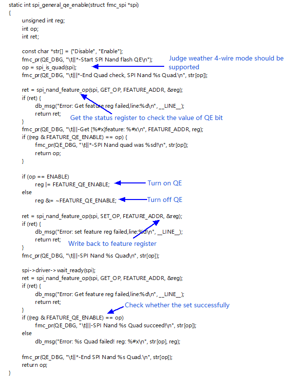
说明：
当前市面上的SPI NAND Flash的QE bit使能都是遵循上面驱动中的操作。如果所新增的器件QE bit使能的方式有所差异，可以参考上面的驱动代码进行修改。 -
-
将ID合入到_fmc_ids_hi35xxvxxx.c_文件中后，编译烧写上电启动查看U-Boot的打印信息，查看ECC是否跟手册要求的ECC类型匹配。
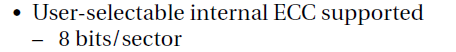
 警告：
警告：
驱动匹配出的ECC大小必须保证不小于SPI NAND Flash手册要求的ECC大小。建议用户在实际使用过程中尽量匹配更高的ECC类型，这样有利于提高器件的寿命。
在使用量产工具（spinand_product/nand_product）制作烧录镜像时，所输入ECC type参数：
ECC type ECC size:
1 4bit/512B
2 16bit/1K
3 24bit/1K
4 28bit/1K
一定要匹配实际使用的ECC type，可以从U-Boot驱动打印信息中获取。


常见问题整理
SPI NOR Flash 3byte/4byte启动和SPI NAND Flash 1/4线启动
3Byte/4Byte地址位宽这个概念是针对于SPI Nor的。芯片在上电启动的时候，会去读取SPI NOR Flash的前1MB空间，单板上的3Byte/4Byte决定了控制器读取时下发的地址宽度。
- 3Byte地址位宽最大的寻址空间是16MB，所以对于容量不大于16MB的SPI NOR Flash的3Byte/4Byte模式拨码必须是3Byte；
- 对于大部分32MB及其更大容量的SPI NOR Flash，出厂时器件默认是3Byte模式，意味着只能访问前16MB空间，所以此时3Byte/4Byte模式拨码必须是3Byte；
- 对于一小部分32MB及其更大容量的SPI NOR Flash，出厂时器件默认是4Byte模式，这类器件3Byte/4Byte模式拨码必须是4Byte。
1/4线启动是针对SPI NAND Flash的，这里必须强调SPI NOR Flash是默认1线启动，几乎所有的SPI NAND Flash都支持1线和4线，4线接口向下兼容1线。1/4线拨码取决于硬件设计：
- 当图1SIO3接到芯片上有效IO上时，表示支持4线，1/4线拨码应拨成4线启动，可以得到更快的启动速度；
- 当图1 SIO3没有接有效IO时，这种场景是有的，因为产品SPI Nor和SPI Nand是共焊盘的，而SPI NOR Flash IO3一般复用成reset信号，此时1/4线拨码应拨成1线启动。

BurnTool显示烧写成功，但串口没打印
实际使用过程中，我们可能会遇到这样的一个场景，出现BurnTool提示写成功，但是串口却持续输出空格。一般情况下有两个情况可能导致这种问题：
-
SPI Nor 3Byte/4Byte问题
确认3Byte/4Byte问题的方法是，Fastboot先选择烧写DDR，启动之后读写数据，如果读出来的数据跟原始数据对比发现数据错位，基本上可以确认是3Byte/4Byte接口问题。还有一种厂家是掉电能启动，发送复位命令发现Flash启动不了，一般也是这个问题。
图 1 SPI Nor 3Byte/4Byte问题数据对比图

SPI Nor 3Byte/4Byte问题处理方法：检查一下单板拨码，或者要检查一下软件复位流程是否成功。
-
SPI Nor/SPI Nand 4线问题
确认4线接口问题的方法是，Fastboot先选择烧写DDR，启动之后读写数据，如果发现读出来的数据跟原始数据对比出现很多1bit翻转的情况，基本上可以确认是4线接口问题。
图 2 SPI Nor/SPI Nand 4线问题数据对比图

SPI Nor/SPI Nand 4线问题处理方法：检查一下硬件的接口连线。
- IO3必须接有效的IO信息线；
- IO3必须加上拉。
4bit ECC、8bit ECC和8bit/1k ECC、16bit/1k ECC
由于历史原因，用户可能会对4bit ECC和8bit/1K ECC，8bit ECC和16bit/1k ECC产生混淆。器件说的4bit ECC和8bit ECC每个纠错单元是512B，而Fmcv100的8bit和16bit每个纠错单元是1KB（1KB指1KB数量级，并不是严格意义上的1024Byte；512B指512数量级，并不是严格的512Byte，一般是526Byte）。所以，其实4bit/512B等价于8bit/1K，8bit/512B等价于16bit/1K。
建议我们的开发和支撑人员在跟客户交流ECC的时候，把纠错单元的大小也指明，免得造成误解。
使用大容量NAND应该注意的地方
大容量 NAND是指容量>4G的NAND器件。4G是一个32位无符号整型所能表示的最大极限，超过这个界限，32位变量会发生回绕。当前测试过的最大容量为8G。使用>4G的器件时，应该注意文件系统（UBI/YAFFS2）分区大小不能超过4G，否则文件系统可能回绕。
为什么在NAND上, U-Boot保存环境变量后，系统无法启动
有些用户在NAND上烧写完U-Boot后，系统能正常启动，但保存环境变量后，系统无法启动。
原因如图1所示，U-Boot占三个好块，NAND起始位置有三个坏块，保存环境变量后，fastboot内容被擦除，系统无法启动。这个时候，要把环境变量地址往后挪。

如何正确使用mtd-utils的nandwrite裸写工具
使用mtd-utils的nandwrite裸写工具时，如果写的是u-boot.bin镜像，且镜像大小大于Nand Flash的一个块的大小，一定要保证u-boot.bin镜像的数据按块对齐填充。否则，写进去的u-boot.bin镜像无法正常启动。
具体原因如下：
由于个别Nand Flash出厂时坏块标记位（BB，Bad Block）被标记为非全0的数，例如0xFE，在判断坏块的时候，容易被FMC控制器利用ECC纠错为0xFF(因为全0xFF在控制器的ECC算法上是合法可纠错的)，故在每一个page的OOB信息的最后两个byte设置空块标记（EB，Empty Block）位。如图1所示，在U-Boot启动时，逻辑上把block视为好块的前提条件是：block的第一个page 1和最后一个page N的BB=0xFF，EB=0x00。

nandwrite是根据镜像文件大小逐页写数据的，并且写page时，会自动将当页的EB位配置为0x00。当写的最后一个page不是所在block的最后一个page时，由于所在block最后一个page的EB=0xFF，逻辑就是视这个block为空块不会去读数据，导致U-Boot启动失败。
值得注意的是，由于Nand Flash器件出厂时保证第一个块为好块，故逻辑不会去判断第一个块的情况，所以当u-boot.bin镜像大小小于一个块大小时，U-Boot是可以正常启动的。
此外，一旦U-Boot正常启动，软件上我们不会再去判断EB位，这也是为什么使用nandwrite写内核镜像和文件系统镜像时可以不考虑镜像大小是否块对齐。
如何查看U-Boot下flash相关的报错信息以及器件名长度限制
U-Boot下部分flash相关的报错信息都是默认未打开的。如果需要此信息，可以在configs/hi35xxx_defconfig，将CONFIG_LOGLEVEL=4修改成CONFIG_LOGLEVEL=8。
flash器件在适配过程中，器件名的长度是有限制的，当前器件名长度限制在32bit以内，超过这个长度会导致器件启动失败。如需调整这个器件名长度，修改文件include/linux/mtd/mtd.h，将MAX_FLASH_NAME_LEN宏定义的值调大即可。
Hi3516CV610/Hi3516CV608芯片 Flash最高频率支持修改
Flash频率高低决定了Flash读速，影响了U-Boot镜像、内核镜像、rootfs镜像加载及文件系统读速，对快速启动有极其重要的影响。
Hi3516CV610和Hi3516CV608芯片Flash默认电压是1.8V，此电压下最高只能支持到75MHz频率。如果选型的Flash能支持更高频率，需要修改BOOT表格FMC_VOLT_REG寄存器，使Flash电压支持到3.3V。
如下图所示，修改BOOT表格中FMC_VOLT_REG项的Value值：可以填0x0或者0x1 （当前版本默认是0x1）
SFC器件工作电压和速率选择：
0x0: 最高支持99MHz（仅3.3V支持）
0x1: 最高支持75MHz (3.3V/1.8V均支持)

表格路径：boards/dmeb/tools/pc/boot_tools/
请根据产品实际Flash选型对应型号Flash手册查看Flash支持的最高频率，再确定是否要修改。
多Die功能驱动适配
硬件多Die逻辑：多Die芯片如2Gbit芯片由两个1Gbit的Die堆叠而成，在逻辑上共享片选，但拥有独立的内部存储阵列。访问第2个Die时，必须满足两个条件：
- 发送Die选中命令：向芯片发送特定指令（如0xC2）切换内部活跃Die。
- 物理地址回绕：发送给2Die的行地址（Row Address 必须扣除1Die的偏移量，从0x0开始重新计算）。
内存控制器适配策略：核心需在内存控制器的read、write、erase核心入口函数中实现对访问地址的判断和发送切换接口命令。
-
在器件适配的结构体中添加两个成员用于描述2Die相关信息
- 成员一：用于描述该器件是1Die还是2Die器件。
- 成员二：用于定义单Die 的边界大小。
-
在读写擦接口（read/write/ erase ）中注入判断：
- 检查是否为2Die器件，若不是则继续执行后续流程。
- 如果是2Die器件，则判断偏移地址是否大于等于单个Die的容量。如果是，将偏移地址减去一个 Die 的容量。然后调用切换Die的接口，完成后正常做读写擦代码即可。
实现切换Die的接口函数 send_die_select_cmd
判断超过单 Die 边界后 ，利用 fmc 寄存器（如 FMC_CMD, FMC_OP_CFG等 ）发送 0xc2（命令为示例）命令给器件做切换 Die 处理 。